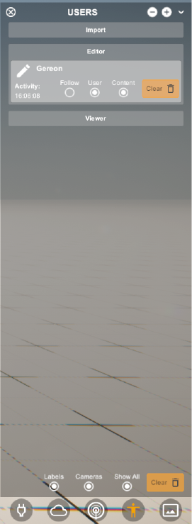

4. Users Menu#
This menu lists all users and their associated data. They are sorted as:
imported,editorsandviewerson the channel. It is possible to toggle the visibility or delete withclear. Giving the viewer control over the displayed geometry.
4.1. Import - Data loaded from RADii file#
NickName |
That saved the imported file (Example. Anonymous) |
Content |
Toggle content |
|
Delete content from viewer |
Content Parts |
Toggle content |

4.2. Editor - data that was published from Rhino Grasshopper#
Follow |
Follow the Rhino view of the user |
NickName |
The RhinoGrasshopper editor |
Follow |
Follow the Rhino view of the user |
User |
Toggle avatar |
Content |
Toggle content |
|
Jump to the position of the Editor |
|
Delete content from viewer |
Content Parts |
Toggle content |

{kind=link}
{kind=link}
4.3. Viewer - all other viewers that are on the channel right now#
NickName |
Viewers (EG. Viewer PC) |
Follow |
Follow the Rhino view of the user |
User |
Toggle avatar |
Content |
Toggle content |
|
Jump to the position of the Viewer |
|
Delete content from viewer |
Content Parts |
Toggle content |
4.4. Menu#
Labels |
Toggles visibility |
Cameras |
Toggles visibility of other user cameras |
Show All |
Toggles all user content |
Clear |
Delete all content |

4.5. Video tutorials:#
Toggle content